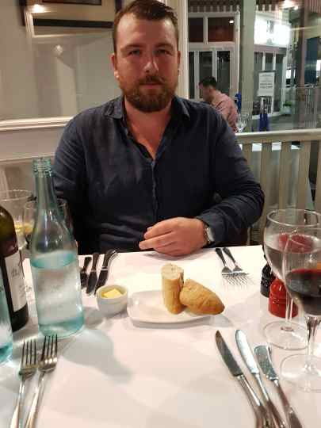

Assignment 1.
My Profile.

Name: Martin Gallagher.
Student Number: s3863221.
Email: mjgallagher1989@gmail.com
My name is Martin, I am 31 years old and come from Ireland. I currently work as an Agricultural Technician for a farm in Far North Queensland. When I first went to university I studied medicine, but decided it wasn’t for me so changed over to actuarial science after 2 years.
I used to be fluent in German, but I haven’t spoke it for about 8 years now, so I am very rusty. I can understand what is being said to me but find it difficult to answer more advanced questions. I am trying to learn Korean at the moment, as my fiancée is from Seoul, but finding it very difficult unfortunately.
I think an interesting thing about me is that from early next year, I will have 4 citizenships, those being Irish, British, Australian and Korean. It is very convenient for work and travel!
Interests in IT
I have a few different interests in IT, and each started at different times in my life. Getting my first computer at 10 years old, I was always playing around to see what I could do, then that snowballed into learning to fix basic problems, and eventually being the family's go-to guy for updating anything technical, fixing speed issues on their computers,
and setting up any new gadgets they had.
The interest that came for me later was during my first trip to Korea, about 6 years ago. They were so far in front of anything I had ever seen, it blew my mind. Everything was there to make life easier, and seeing these in action just brought the thought, it is so simple, why aren't we doing this?
It was the first place I saw people making purchases with their phones, in places such as convenience stores or to pay for public transport, government warnings about weather or dangers would automatically appear on your phone, and my favorite, an app for food deliveries that you could pay, track the driver, leave reviews and buy gift vouchers.
I know now we also have these things, but at the time to me it was amazing and nothing like anything I had ever experienced. I always enjoy when new software or hardware comes along that makes life that little bit more convenient, and I would love to be at the forefront of those innovations.
More recently, I have developed an interest in cybersecurity. It is so important today with the amount of personal data we generate, the way that data is used by companies, and the increasing movement of critical systems online, such as banking, infrastructure control, national defense, healthcare data to name a few. Data has without doubt become the newest hot commodity, so protecting it and the systems that hold it is more relevant then ever.
I chose RMIT as my place of study because it offered exactly the kind of course I wanted to do and offered the course remotely. I live in quite a rural part of North Queensland, and work full time, so online learning was my only choice if I wanted to study. I had also met people that had studied at RMIT, and they told me about the student services and support offered, which sold me on this university even more.
During my studies, I expect to learn not only the practical knowledge needed to pursue a career in IT, such as programming languages, common tools used by IT professionals, etc. but also how to work in a team, work remotely, ethical issues in IT and, most importantly, which area I see myself working in in the future. I have my interests now, but they could change as I learn more, and open my eyes to areas and issues I have never considered.
Ideal Job
Cyber Security Analyst
Job Link
Job Description
1)Overseeing the cybersecurity of the business in relation to servers, cloud applications and networks.
2)Provide relevant details of the security to other departments, some of whom may have no knowledge of the area.
3)Continuously assess the defenses of the company, and design and implement new strategies for cybersecurity.
I find this job appealing as it would provide a constant challenge, which would mean I would always be learning and moving forward with new ideas and approaches. It incorporates a range of techniques that I have an interest in and would enjoy, such as software development and team coordination.
There are aspects of my current job that I find satisfying and fulfilling are directly translatable to this career, such as risk assessment, auditing current systems, seeking out threats and explaining the systems to others, so to be able to take that to an IT environment I find exciting.
Requirements
The qualifications needed for this job are a relevant degree in security or software development, training in those fields, and finally certifications in Information Securities.
Experience needed is practical application of those studies, knowledge of different aspects of cybersecurity such as forensics, reverse engineering, firewalls, content filtering and file Integrity monitoring technologies, and previous work experience in security environments.
They also value personal and communication skills, such as the ability to train new team members, dealing with customers and teams, and being able to effectively communicate new ideas and techniques, whether written or orally.
My Skills
In regard to qualifications and experience, I have a long way to go before I get to the required level, but it is something that I am looking forward to working towards and attaining.
Outside of technical ability, in my current field I have developed the communication and personal skills that the company is looking for, particularly the training and working in teams aspect.
As a team leader currently, I have a lot of experience in this area, and often deal with clients where I have to present my work to them, so I feel this would hold me in good stead in this future career.
Plan
I want to first gain my undergraduate degree in Information Technology from RMIT. From there, I would like to get an entry level IT job, preferably in software development, for experience and on the job training.
While working, I would like to study a master's degree in cybersecurity part time. After I have completed the master's, I would look to move to an entry level cybersecurity job for experience, then gain the certification needed for this job.
Personal Profile
RESULT OF MYERS-BRIGGS TEST
ENTJ- The Commander.
To me, this result means that I like to be organized, and organize others effectively move towards a goal, and to think through problems logically. On the other hand, it can also mean I can be impatient and stubborn with other people, so that could cause clashes within a team project.
This result shows me that I would want to be in charge, and I will argue my point when discussing topics, or when I disagree with a certain approach. Now I have seen this result, it will make me be more aware of other members feelings, try to be more patient and understanding, and take constructive criticism in a tolerant way.
When we form a team, it will be important to take our personality types into account, as we could end up with too many people wanting to take the lead, which could bog down the project and cause friction between members. Preferably I will find team members that would be happy for me to organize and assign roles, but if that is not the case I would be willing to yield leadership to someone who has more experience in the area than myself, and offer all my opinions and abilities to get the task done.
Very Well Mind 2019, ENTJ: The Commander (Extraverted, Intuitive, Thinking, Judging)- An Overview of the ENTJ Personality Type,
Very Well Mind, viewed 18th June 2020,
https://www.verywellmind.com/entj-personality-type-2795981
Truity 2020, The TypeFinder personality test,
Truity, viewed 18th June 2020,
https://www.truity.com/personality-test/17335/test-results/21916244
RESULTS OF LEARNING STYLE TEST
Visual Learner
This result means I prefer to learn by writing down new information that I want to remember, use visual aids such as graphs, diagrams and videos when approaching projects, prefer being able to read instructions rather than be told verbally, and like to stay organized.
In a team environment, this means it would be more effective for me to have most contact through email, otherwise take notes during any video conferences. For this reason I will have detailed, organized notes of what has been discussed by the team, which would be useful as we progress. It would also impact how I present my work to the other members, so depending on their learning types I would have to adapt my content to them.
The best way to form the team using this information is to try and blend the different types into the team. As each person learns differently, they may pick up on information that I may miss as a visual learner, so if we combine the types we can get a rounded picture.
What Is My Learning Style? 2014, Learning Styles Test 1,
What Is My Learning Style, viewed 18th June 2020,
http://www.whatismylearningstyle.com/learning-style-test-1.html
What Is My Learning Style? 2014, Visual Learner,
What Is My Learning Style, viewed 18th June 2020,
Simply Hired Staff 2016, 'Tap Into Different Learning Styles to Build a Better Team',
Simply Hired, blog post 25th January, viewed 18th June 2020,
https://blog.simplyhired.com/employers/learning-styles-better-teams/
RESULTS OF DiSC TEST
C-Type Personality
The results of this test seem to closely match the results of the Myers-Briggs test above, and so reflect similarly on how it would influence me in a team project. I would take into account the ways C types are able to increase effectiveness, such as looking beyond plain data and facts, trying to connect more with people on a personal level, and acknowledging their feelings, even if I find them irrelevant to the task.
DiscProfiles 2019, What Is The DiSC C Style?,
DiscProfiles, viewed 18th June 2020,
https://www.discprofiles.com/blog/2019/09/what-is-the-disc-c-style/
PROJECT IDEA
Overview
My idea for an IT project is a currency wallet that stores funds securely on a mobile phone or tablet, used to make payments in stores, and to transfer money instantly between friends using NFC. A name that I thought for the project would be TipTap.
Although similar apps are available, the difference I would look to implement is that it would not require internet access to process payments through servers immediately, as the currency is physically stored as 'tokens' on the device. A payment between two devices would be the exchange of these secure tokens over NFC.
Finally, there would be an option to withdraw funds to your bank account.
Motivation
This idea first came to me during the current COVID-19 crisis. Physical cash money was no longer readily accepted due to the risks associated, so we relied on EFTPOS or credit/debit cards to make our purchases. These systems rely on an internet connection, and if they go down there is no way to pay. As I live in an rural area that is prone to flooding and cyclones, these systems can and often have gone down, leaving us with no access to our money.
Another influence for me was when dealing with friends during the outbreak. We were all wary of passing physical cash between each other, for common things such as small payments and loans, but the only other option was to make a bank transfer. The problem with that is that if we do not share the same bank, these transfers would often take up to 24 hours to process. If they needed that money straight away this is not a viable solution.
I think this is an interesting project as the infrastructure is already in place. Most modern smartphones come with NFC built-in, and NFC readers are accessible in most shops. In my opinion, it solves a problem using existing and readily available technologies.
Description
The main features of this application will be;
1) Encrypted local storage of currency on a device, secured using the built-in biometric sensors of the device.
My idea would be to turn any smartphone into a digital wallet, similar to offline cryptocurrency storage, but using the local currency of the user's location.
After signing up for an account, the user can deposit funds through the app or website using bank transfer, card deposit, or, in the future, vouchers that would be available in store, akin to iTunes or Google Play gift cards. The monetary value of their deposit would be stored on the hard drive of their device as localized 'tokens', that would not need to be verified with a server at point of payment/transfer, rather 'tick down' as they were spent.
When a connection becomes available, the app can then register back with the server about current account balance, transactions, etc.
The tokens themselves would be secured with the commonly featured biometric sensors available on most smartphones, such as fingerprint scanners or face ID, although the option of a PIN or password would be available also.
*It is important to note that a connection would be required at the point of deposit.
2) Instant money transfer to another user.
Two users could send and receive money to each other using NFC, by tapping or bumping phones. The payer would authorize this payment through their chosen security preference such as fingerprint or password, and the payee would simply open the app on their device and press a button that says "receive" to activate their device.
On the payer's screen it would show the payee's account ID/name, so then can ensure that it is transferring to the correct person in case interference by other nearby devices.
3) Make payments instore.
Using existing infrastructure in store, the funds held in the digital wallet could be used to make payments in-store.
As the funds are held on the device, do not need to be verified by server, and are secured with biometrics, it would be possible to make the tap limit higher than the current limit on EFTPOS, which would be convenient for the user.
4) Offline use.
As mentioned throughout the description, this is the key feature and most notable aspect of this application.
Proposed features that may become available later in the project, as technology infrastructure advances.
1) There would be potential to have multiple wallets under the same account for different currencies, to offer secure payments while overseas. The idea would be to replace the travel debit cards that holiday makers often use as a security measure when travelling abroad.
2) As NFC-enabled ATMs become more widespread, I would investigate the feasibility of withdrawing physical cash from these ATMs, perhaps by having the option to link a bank account to the users TipTap account.
Tools And Technologies
The aspect of this project that I find most intriguing is the fact that most of the hardware needed is purchased by the users, being their smartphones, while most stores already operate NFC terminals, so the user infrastructure is already there.
The business would certainly need secure servers as it is operating in the financial world, with users personal and account details.
On the software side, an app would have to be developed for both Android and iOS. Xamarin could be used for this.
This service is a real-time payment rail, with the funds themselves being stored locally as a digital currency, controlled by the company. I see the concept as similar to how Bitcoin is stored and transferred but would not be decentralized. The account balance is an accounting entry, and therefore suits a blockchain
'The blockchain is ultimately a ledger that represents accounting entries. Therefore, bank accounts could come to be represented on blockchains making them more secure, accessible and cheaper to maintain.'
(Investopedia 2019, Blockchain Technology To Revolutionize Traditional Banking, Account Balances and Deposits)
Skills Required
I think this project would need significant technical expertise in software development, application development, data management, cryptography, blockchain development and maintenance, and cybersecurity but I do think it is technically feasible with current technologies.
Software needed would be the user applications themselves, the private blockchain and security software like firewalls, all of which would have to be vigorously updated and tested due to the nature of the business.
I also think that extensive legal advice would be needed, as operating a financial service is heavily regulated.
While I feel strongly that the project is technical possible, I worry about whether a government would allow it to happen, as this project essentially aims to eliminate most needs of physical cash, and would be under the control of one company, so there would certainly be legal and ethical barriers to market entry.
Outcome
If the project were a success, I think it would revolutionize the way we interact with money every day.
Physical cash would become virtually obsolete, and a person's funds would always be accessible to them if they have a smartphone.
Theft of cash would also be eliminated, as even if a user's phone is stolen, the thief would not be able to access the account without the right biometrics or password.
In summary, I think that access and use of our money would be more convenient, more secure, and more reliable.